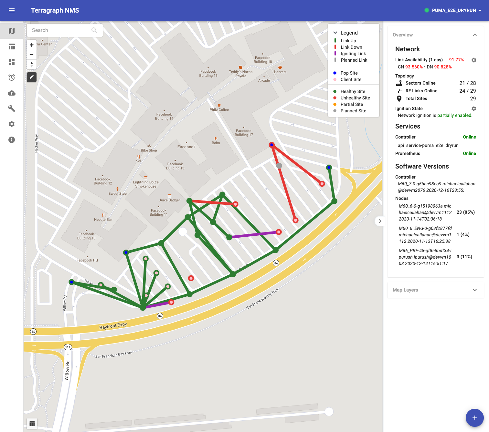
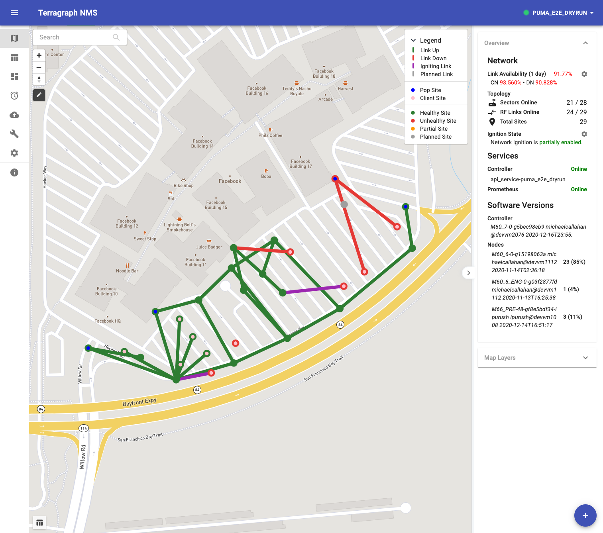

TGNMS¶
The TGNMS landing page shows a map view of all the nodes currently in the network, as well as status information about these nodes and their associated links.
The TGNMS landing page shows a map view of all the nodes currently in the network, as well as status information about these nodes and their associated links.
